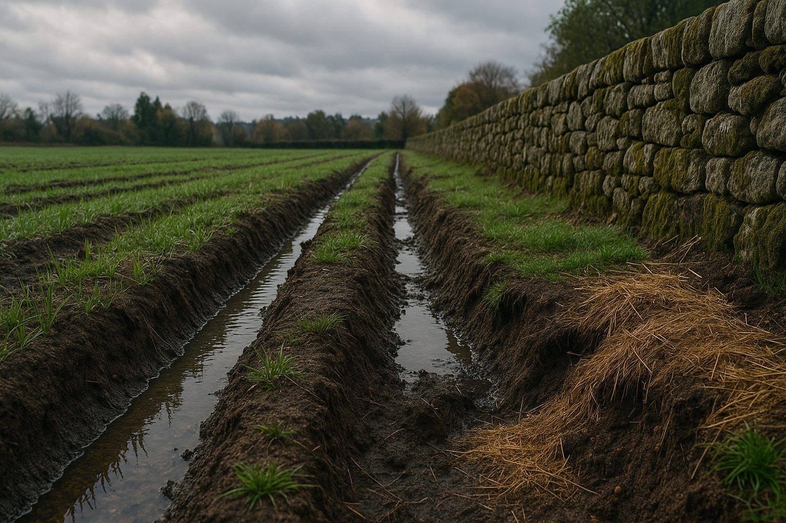

Como proteger o terreno antes do inverno: drenagem, cobertura vegetal e prevenção da erosão
Publicado por Motivo Rústico • Setembro 2025
No norte de Portugal, especialmente no Minho e em Guimarães, as chuvas intensas de outono e inverno podem provocar alagamentos, erosão do solo, deslizamentos de terras e danos em muros ou caminhos. Preparar o terreno com antecedência é essencial para proteger tanto a sua casa como o património agrícola. Neste artigo reunimos as melhores práticas de drenagem de águas pluviais, cobertura vegetal e técnicas anti-erosão, baseadas na experiência da Motivo Rústico em obras e terraplanagem na região.
Porque preparar o terreno é tão importante?
O inverno no Norte de Portugal traz chuvas fortes que, sem cuidados prévios, podem levar a inundações, degradação do solo e instabilidade em muros. Ao planear com antecedência, evita-se prejuízos em casas, caminhos rurais e terrenos agrícolas. A preparação garante segurança e preserva o valor do seu investimento.
1) Drenagem eficiente
O objetivo da drenagem de terrenos é captar, conduzir e infiltrar a água da chuva de forma controlada, evitando encharcamentos, erosão e infiltrações junto a habitações. Em terrenos inclinados, é fundamental orientar os canais de escoamento para zonas seguras, longe de fundamentos de casas, anexos ou muros de suporte. Para mais detalhes, consulte também o nosso guia sobre Drenagem de Águas Pluviais em Guimarães e Minho.
1.1 Drenagem superficial
- Valas e caneiros: conduzem a água da superfície para áreas de infiltração natural.
- Valetas laterais: protegem estradas rurais e caminhos de acesso a casas.
- Bacias de receção: recolhem águas de telhados, quintais e zonas mais altas.
1.2 Drenagem subterrânea
- Dreno francês: tubo perfurado envolvido em brita e geotêxtil, ideal para solos argilosos.
- Poços e caixas de retenção: permitem controlar descargas em dias de chuva intensa.
- Geotêxtil: aumenta a durabilidade do sistema e evita entupimentos.
Em terrenos agrícolas com vinha ou olival, os drenos subterrâneos ajudam a proteger as raízes de excesso de água durante o inverno.
2) Cobertura vegetal de inverno
Um terreno sem cobertura vegetal está mais exposto à erosão. O uso de plantas de inverno é uma solução natural e económica para proteger o solo.
- Relvas rústicas: resistentes ao frio, criam um tapete verde e protegem contra a erosão.
- Culturas de cobertura: centeio, aveia e trevos são excelentes para solos agrícolas e jardins.
- Mulching: palha, estilha de madeira ou casca de pinheiro ajudam a manter a humidade e evitar que a chuva bata diretamente no solo.
Além de proteger, a cobertura vegetal melhora a fertilidade da terra, contribuindo para um solo mais saudável na primavera.
3) Prevenir a erosão
A erosão do solo é uma das principais ameaças para terrenos inclinados. Técnicas simples podem estabilizar o terreno e proteger a sua casa ou exploração agrícola.
- Muros em pedra: típicos do Minho, são robustos e integram-se no ambiente rústico.
- Escadas de retenção: quebram a velocidade da água em terrenos com grande inclinação.
- Mantas de fibra biodegradável: indicadas para proteger taludes até a vegetação crescer.
4) Manutenção antes das chuvas
Mesmo com boa preparação, a manutenção é essencial. Antes das primeiras chuvas fortes:
- Limpe valas, caleiras, telhados e sarjetas.
- Verifique pendentes e correntes de água junto a caminhos.
- Desobstrua drenos e caixas de inspeção.
- Reforce bermas de caminhos de saibro ou terra batida.
- Inspecione muros, barbacãs e taludes.
Uma pequena revisão anual pode evitar grandes prejuízos em propriedades rurais e casas de férias.
Checklist rápida
- Mapear entradas e saídas da água.
- Abrir valas com pendente contínua.
- Instalar dreno francês em zonas críticas.
- Colocar caixas de inspeção acessíveis.
- Semear cobertura vegetal de inverno.
- Aplicar mulching em taludes e encostas.
- Verificar muros e barbacãs.
- Reforçar caminhos de acesso à casa.
- Limpar caleiras e telhados.
- Rever o terreno após a primeira chuvada.
Perguntas frequentes
-
Quando devo começar?
O ideal é preparar o terreno no final do verão ou início do outono, para poder testar o sistema de drenagem logo com as primeiras chuvas. -
Preciso de licenças?
Pequenas limpezas e manutenção habitual geralmente não exigem licença. Porém, alterações no relevo, construção de muros em pedra ou movimentos de terra de maior impacto podem requerer autorização camarária. Confira o nosso guia de licenciamento. -
Posso usar a calculadora?
Sim. A Calculadora de Muros ajuda a obter uma estimativa inicial de materiais e custos. ⚠️ Este valor é apenas indicativo — para um orçamento final ajustado ao seu terreno, entre em contacto connosco.
Artigos relacionados
Precisa de ajuda profissional?
A Motivo Rústico executa muros em pedra, drenagens e terraplanagem em Guimarães e em todo o Minho.
Contacte-nos para um orçamento personalizado e prepare o seu terreno para enfrentar o inverno com segurança.